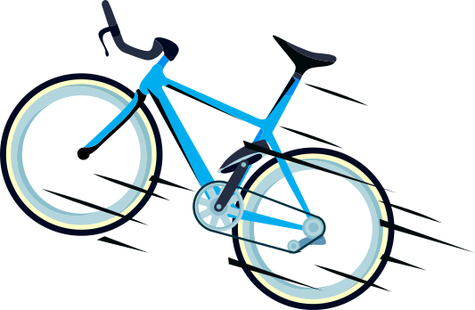

Permiten desarrollar una estrategia de convivencia liderada por niñas, niños, familias y comunidades, favorable al fortalecimiento del tejido social y la construcción de paz para el municipio

Son acciones orientadas hacia la construcción de paz para fortalecer el tejido social a través del arte y la cultura con encuentros comunitarios, eventos deportivos, música, danza, teatro y artes plásticas, murales de la paz, festivales, libros viajeros de paz, parques infantiles, hacen parte de los planes para el fortalecimiento del tejido social y la reconciliación.